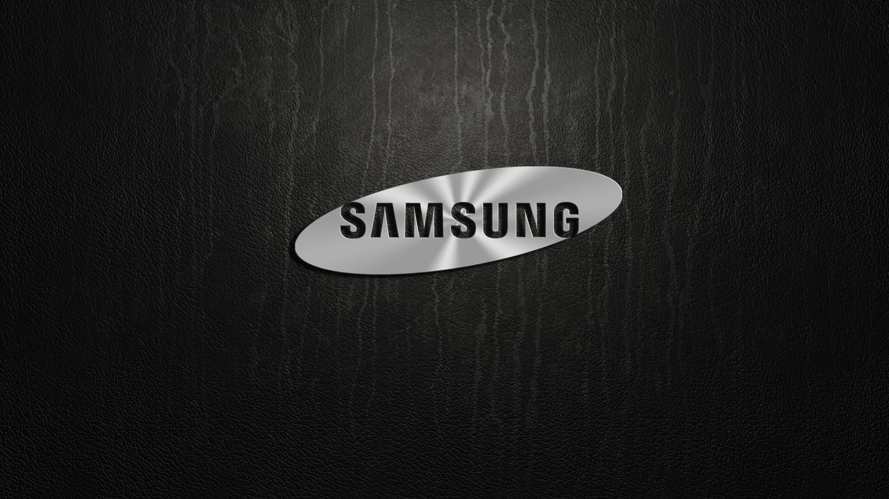

iphone
The iPhone is a smartphone made by Apple that combines a computer, iPod, digital camera and cellular phone into one device with a touchscreen interface. The iPhone runs the iOS operating system, and in 2021 when the iPhone 13 was introduced, it offered up to 1 TB of storage and a 12-megapixel camera.
The original iPhone was announced on Jan. 9, 2007, at the Macworld convention by Apple co-founder Steve Jobs. While it was not considered the first smartphone, the iPhone has helped drive the global shift to mobile computing among both consumers and businesses. Its primary rival has been Google Android-based devices from companies such as Samsung, also introduced in 2007.
The first-generation iPhone came preloaded with a suite of Apple software, including iTunes, the Safari web browser and iPhoto. Internet Message Access Protocol and Post Office Protocol 3 email services were integrated with the device.
Vivo
Vivo mobile company history starts in the year 2009 when Shen Wei founded this mobile company with the headquarters in Dongguan and Guangdong in China. As many users asked, Who invented the Vivo company? or Who owns Vivo mobile?
Just after six and half years in 2015, Vivo ranked among the top 10 smartphone makers and providers in the world with a market share of up to 2.7% worldwide. This became possible after the Vivo mobile company in India, Thailand, Malaysia, Vietnam, Myanmar, and the Philippines was introduced. Vivo also has R&D centers in Shenzhen and Nanjing. In the Year 2016, Vivo had more than 1,600 human resources allocated in the Research and Development centers.
samsung
Samsung Mobile Division is one of five divisions within Samsung Electronics, belonging to the Samsung Group, and consists of the Mobile Communications Division, Telecommunication Systems Division, Computer Division, MP3 Business Team, Mobile Solution Centre and Telecommunication R&D Centre. Telecommunication Business produces a full spectrum of products from mobiles and other mobile devices such as MP3 players and laptop computers to telecommunication network infrastructure. Headquarters is located in Suwon, South Korea.
In 2007 Samsung Mobile Division Business reported over 40% growth and became the second largest mobile device manufacturer in the world.[2] Its market share was 14% in Q4 2007, growing up from 11.3% in Q4 2006.[3] At the end of November 2011, Samsung sold more than 300 million mobile devices which was a close second after Nokia with 300.6 million mobile devices sold in the first three quarter of 2011.[4] As of Q3 2012, Samsung is the largest manufacturer of devices running Google's Android with a 46% market share.[5]
On 19 August 2016, Samsung officially released its Samsung Galaxy Note 7. As of 2 September 2016, Samsung announced a voluntary recall and attached to the new exchange program, after numerous of report showed that the new Samsung Galaxy Note 7 burst and exploded. On 10 October 2016, in response to the new incidents, Samsung announced that it would once again suspend sales of the Galaxy Note 7 and recall all devices worldwide. The next day, Samsung also announced that it would permanently discontinue the Galaxy Note 7 and cease its production

oppo
OPPO Electronics Corp. is an electronics manufacturer based in Guangdong, China. Known for its smartphones, the company also makes MP3 players, portable media players, LCD-TVs, and DVD/Blu-ray players. It was founded in 2004. The company is also a smartphone maker. It has launched a whole range of Android powered smartphones. Oppo's latest mobile launch is the A55s 5G. The mobile was launched in 19th November 2021. The phone comes with a 6.50-inch touchscreen display with a resolution of 1080 pixels by 2400 pixels at a PPI of 405 pixels per inch.
The Oppo A55s 5G is powered by 1.8GHz octa-core (2x2.04GHz + 6x1.8GHz) Qualcomm Snapdragon 480 processor and it comes with 4GB of RAM. The phone packs 64GB of internal storage that can be expanded up to via a microSD card. As far as the cameras are concerned, the Oppo A55s 5G packs a 13-Ultrapixel
Techno
Tecno Mobile is a mobile phone brand that's owned by Hong Kong-based Transsion Holdings, which in 2017 launched another mobile brand in India - Itel. Tecno Mobiles was established in 2006. Tecno's latest mobile launch is the Pova Neo. The mobile was launched in 9th December 2021. The phone comes with a 6.80-inch touchscreen display with a resolution of 720 pixels by 1640 pixels at a PPI of 262 pixels per inch.
The Tecno Pova Neo is powered by octa-core MediaTek processor and it comes with 4GB of RAM. The phone packs 64GB of internal storage As far as the cameras are concerned, the Tecno Pova Neo packs a 13-megapixel primary camera on the rear and a 8-megapixel front shooter for selfies.
The Tecno Pova Neo runs Android 11 and is powered by a 6000mAh. It measures 171.39 x 77.25 x 9.15 (height x width x thickness) .
The Tecno Pova Neo is a dual SIM (GSM and GSM) mobile that accepts Nano-SIM and Nano-SIM. Connectivity options include Wi-Fi, GPS, Bluetooth, USB OTG, FM, 3G and 4G (with support for Band 40 used by some LTE networks in India). Sensors on the phone include Fingerprint sensor, Proximity sensor and Ambient light sensor.

L.G
Founded in Seoul in 1958 as GoldStar, LG Electronics today makes home appliances, mobiles, tablets, and televisions. LG launched its first Android smartphone in 2009, and its first Android tablet in 2011. The company is known for its flagship G series of smartphones and a wide range of products including smart TVs. LG's latest mobile launch is the W41 Pro. The mobile was launched in 22nd February 2021. The phone comes with a 6.55-inch touchscreen display with a resolution of 720 pixels by 1600 pixels.
The LG W41 Pro is powered by 2.3GHz octa-core MediaTek Helio G35 processor and it comes with 6GB of RAM. The phone packs 128GB of internal storage that can be expanded up to 512GB via a microSD card. As far as the cameras are concerned, the LG W41 Pro packs a 48-megapixel + 8-megapixel + 2-megapixel + 5-megapixel primary camera on the rear and a 8-megapixel front shooter for selfies.

sony
Sony Mobile (previously known as Sony Ericsson Mobile) is a subsidiary of the electronics giant Sony Corporation. The company's Xperia range that started off with Windows Mobile OS has moved to Android and is a significant part of the smartphone market today. The company markets some of its phones as waterproof and dustproof. Sony Interactive Entertainment is a Sony subsidiary founded in 1993, which went on to make the PlayStation series of gaming consoles and critically acclaimed and successful video game series such as God of War and Uncharted. Sony's latest mobile launch is the Xperia Pro-I. The mobile was launched in 26th October 2021. The phone comes with a 6.50-inch touchscreen display with a resolution of 3,840 pixels by 1,644 pixels.
It comes with 12GB of RAM. The phone packs 512GB of internal storage that can be expanded up to 1000GB via a microSD card. As far as the cameras are concerned, the Sony Xperia Pro-I packs a 12-megapixel (f/2.0) + 12-megapixel (f/2.4) + 12-megapixel (f/2.2) primary camera on the rear and a 8-megapixel front shooter for selfies.

honor
Honor is a mobiles, tablets, and wearables brand of Chinese telecommunications giant Huawei. Established in 2013, the largely-online brand contributes a significant proportion of Huawei's total sales in its categories. Honor's latest mobile launch is the 60 Pro. The mobile was launched in 1st December 2021. The phone comes with a 6.78-inch touchscreen display
The Honor 60 Pro is powered by octa-core Qualcomm Snapdragon 778G Plus processor and it comes with 12GB of RAM. The phone packs 256GB of internal storage As far as the cameras are concerned, the Honor 60 Pro packs a 108-megapixel (f/1.9) + 50-megapixel (f/2.2) + 2-megapixel (f/2.4) primary camera on the rear and a 50-megapixel front shooter for selfies.
top